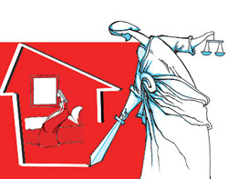

|
|

روایت موکلم از خشونت: کلیدی که روی میز شماست کلید خانه من است
گزارش یک وکیل
شنبه10 بهمن 1388
روایت موکلم از تبعیض : این قانون حقی برای من قائل نیست
تغییر برای برابری - حدود دو سال پیش وکالت خانمی را به عهده گرفتم که از طریق کمپین مرا می شناخت. این خانم که هنرمند هم هست دهه 1360 ازدواج کرده است، مثل خیلی از ازدواج های آن دهه که آرمان گرایی بر دیگر مسایل غلبه داشت، او هم خیلی رمانتیک و آرمانی ازدواج کرده بود، ازدواجی عاشقانه که حتی زوجه شرایط نه چندان راضی کننده در سند ازدواج وحتی دارایی مشترک در آن سند را هم امضا نکرده بود. بنا به ادعای این خانم، زندگی مشترک را دست خالی شروع می کنند ویواش یواش در کارشان موفق شده و به دارایی واموال این زوجین افزوده می شود. نا گفته نماند همه دارایی به نام زوج در اسناد رسمی ثبت می شود طبق رویه معمول کشور عزیزمان؛ منتهی با افزوده شدن مال و اموال به جای اینکه احساس آرامش و خوشبختی کنند. متاسفانه روز به روز از هم دورتر شده وتنها وسیله ارتباطی آنها فرزندان مشترکشان می شود و مسایلی در زندگی مشترک پیش می آید که زوج راهی دادگاه شده و تقاضای طلاق می کند .
زمانیکه خانم پیش من آمد، هنوز باور نکرده بود که زندگی مشترکشان به آخر رسیده است و تمام تلاش خود را می کرد که همان زندگی نصفه ونیمه به خاطر مردم هم شده ادامه پیدا کند (البته این استباط من هست ) . امیدی در دل داشت که به هر نحو شده بتواند از فروپاشی زندگی جلوگیری کند. هیچ اعتماد به نفسی هم نداشت و فکر می کرد به تنهایی قادر به ادامه زندگی نیست البته به زبان نمی آورد ولی تمامی رفتارها نشان می داد که این زن هنرمند خود را باور ندارد وفکر می کند که اگر این مرد از او جدا شود زندگیش به آخر می رسد .
ناگفته نماند عدم استقلال مالی این خانم و "آهی در بساط نداشتن" خود بغرنج دیگری بود، او بعد از ازدواج در گالری همسرش مشغول به کارشده بود. بدون هیچ چشمداشتی و هر چه در زندگی اضافه شده بود، به نام مرد خانه بود و بس .به قول موکلم جز چند قلم مو و وسایل نقاشی چیزی ندارد.
اما، ماجرا اینطورادامه نیافت. او بعد از چند ماه توانست به کمک مشاور روانی موضوع پیش آمده را بپذیرد، یاد گرفت که روی پای خود بیایستد و یواش ویواش به زندگی هنری خود برگشت و کار هنریش را که سالها به خاطر خانواده کنار گذاشته بود دوباره از سر گرفت .
حتی بعد از اجرای حکم طلاق سهم این زن از آن زندگی و دارایی حاصل از آن زندگی، بالغ بر چند صد میلیون تومان می شد، با کمتر از بیست میلیون تومان آن زندگی را ترک کرد. این هم نتیجه قوانین نابرابر بر یک زن است که بیست سال از عمرش را صرف ساختن این زندگی کرده بود .
قبل از این که حکم طلاق صادر شده و صیغه طلاق جاری گردد، هنوز این خانم در خانه مشترک بود و آن را ترک نکرده بود؛ و ناگفته نماند که زوج قبل از جاری شدن طلاق برای اینکه فرصت را از دست ندهد تقاضای خلع ید ملکش را که خانم در آنجا ساکن بود کرده بود. اما چون طلاق رجعی بود و موکل حق داشت که مدت عده را هم در آن خونه مقیم باشد- با وجود اینکه خانه کوچکی به کمک دوستانش اجاره کرده بود - اما اصرار داشت تا اتمام مدت عده در آن خانه سکونت کند! عجیب بود این اصرار موکل، آن هم برای منی که مدافع حقوق زنان و توانمند شدن آنها در برابر مشکلات است و خصوصا این عمل را کسر شان او می دانستم و درک نمی کردم چرا او خانه را ترک نمی کند. البته تصمیم داشتم که مورد او را به صورت یک کیس از قوانین تبعیض آمیز به رشته تحریر در آورم که نامه ای از این خانم بدستم رسید. او علاوه بر جواب دادن به سوال من، چقدر قشنگ به دفاع از خود پرداخته و موارد نابرابر را برشمرده بود. ترجیح دادم که عین نامه را با حذف اسامی بیاورم .
- 
" خانم ارزنی ترجیح دادم براتون بنویسم در باره اعتقادم وعملکردم ،کلید خانه ای را که روی میز شما گذاشتم، کلید خانه ایی است که مال منه، مثل بچه هایم که مال من هستند اگرچه پسوند اسمشان چیز دیگری است. مثل وطنم که مال خودم هست و هویت من هست. همانطور که هیچ کس حق ندارد وطنم را ازمن بگیرد هیچ کس حق ندارد بچه هایم و مادری رو از من بگیرد. هیچ کس هم حق نداره خانه من را از من بگیرد. همه جای وطنم مال من هست وخانه من بخشی از وطن من هست که توی آن خانه سالها عشق ورزیدم،گریه کردم وخندیدم و آنجا زندگی کرده ام و در آنجا به فرزندانم انسان زیستن را یاد دادم. در و دیوار آن خانه پر از صدای موسیقی فرزندانم ونقاشی هایشان و مجسمه هایشان وجای پاهایشان است که توی خیلی از خانه ها جایش خالی است. ارزش مالی خانه برایم مهم نیست چیزهایی که توی آن خانه اتفاق افتاده بود برایم ارزشمند بود.
میدانید چرا کلید رو روز اول تحویل ندادم .اگر روز اول این کار را می کردم یعنی به آقای ... (همسرم) تحویل داده بودم . اما آن خانه مال آن آقا نیست. حق بیست سال زندگی وتلاش و دغدغه ای من بود . مال منه!! برای همیشه وهرگز با اراده خودم به هیچکس تحویل نخواهم دادم. این دزدی را قانون از من کرد قانونی که باید مدافع حقوق من می بود منو محاکمه کرده و مجازات کرده به جرم اینکه زن هستم به جرم اینکه مورد بی مهری یک مرد قرار گرفتم. برای من حکم صادر کرده که باید خانه ام رو ترک کنم و در ناامنی مالی واجتماعی رها شوم . این قانون نابرابر مردسالارانه امروز منو مجرم شناخته وبه روی من تیغ کشیده و به امنیت اجتماعی من حمله کرده وهر چی داشتم از من گرفته. این مشکل قانون هست مشکل قانونه مشکل افراد نیست. برای اینکه مردی که بیست سال از جسم وروح من استفاده کرده وبا بهره گرفتن از حق طلاق به دادگاه رفته و طلاقم داده است. این قانون حق زندگی برای من قائل نیست. برای دخترهایم نیز حقی قائل نخواهد بود. بر خلاف طبیعت که برای زنده بودن و زندگی کردن من تمامی تلاششو می کند. زمینی که به من غذا داده آسمانی که به من هوا داده و طبیعتی که به من زیبایی داده بدون هیچ چشم داشتی به همه یک اندازه .
به همین دلیل کلید خونه ام را به مردی که کنارش زندگی می کردم ندادم تا آخرین لحظه پیش خودم نگه داشتم .
خانم ارزنی کلیدی که روی میز گذاشتم کلید آجر وسیمان آن خانه است کلیه روح آن خانه پیش خودم باقی خواهد بود . این کلید را طبیعت به من داده سندش رو به اسم زده است. در آن خانه من مادر بودن و زن بودن را تجربه کردم و حتی امروز هم آن عشق در دل من زنده است و از این بابت خوشحالم از شما می خواهم که کلید را به قانون تحویل بدهید نه به فرد .
من از مردی که در برابر ایستاده هیچ کینه ای ندارم ولی در مقابل قانون نابرابر می ایستم و از حقم هرگز نمی گذرم و حقوق خود را طلب می کنم و تا در آینده زن هایی مثل من و دخترهای من در قانونی عادلانه و برابر زندگی کنند ."
شما قضاوت کنید آیا من در مورد تبعیض آمیز بودن قوانین در مورد این زن را می نوشتم به شفافی و صراحتی که این خانم بیان کرده می توانستم ادای مطلب کنم؟ این حرف دل هزاران زن ایرانی هست متاسفانه یا شنونده ای وجود ندارد یا می شنوند هنوز این زنان را باور ندارند.